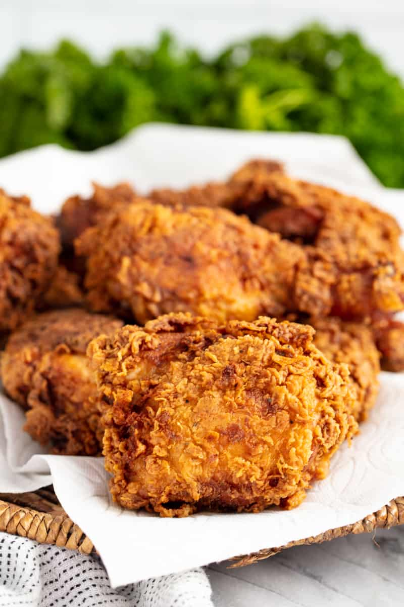

Description
When it comes to chicken there just isn’t anything more delicious than a juicy, crusty piece of finger-licking good fried chicken. It might seem intimidating to fry your own chicken, but it’s actually pretty straightforward and it puts grocery store and fast food fried chicken to shame. If you have a thermometer for the oil and a timer, you can produce fail-proof fried chicken. If you’ve ever wanted to make your own fried chicken, now is the time to try!
Ingredients
- Chicken Breast or wings
- 1 stick of butter
- flour
- 4 eggs
- oil
Steps
- Thaw Chicken for 20 minutes
- Mix eggs and 1 cup of flour
- Melt butter
- Dip chicken in batter
- Cook chicken in oil until golden brown